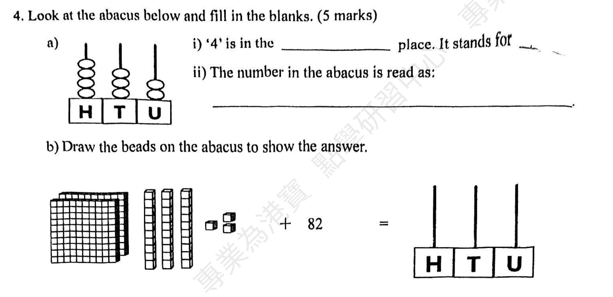
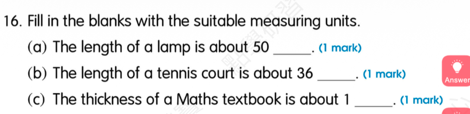
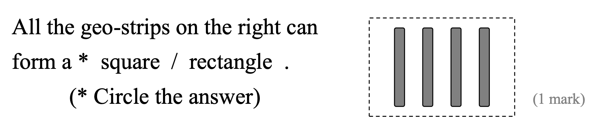

Dad ________ (give) me a new toy now.
Answer: is giving
Explanation: 根据 look/listen/now 等提示判断现在进行时，结构为 be + 动词ing。
已掌握
| # | 单词/词组 | 中文意思 | 例句/说明 | 已掌握 |
|---|---|---|---|---|
| noun 名词 | ||||
| 1 | hotel | 酒店 | We stayed in a hotel. | |
| 2 | friend | 朋友 | My friend is kind. | |
| 3 | picnic | 野餐 | We have a picnic in the park. | |
| 4 | cinema | 电影院 | We watch films at the cinema. | |
| 5 | Saturday | 周六 | I can use Saturday in class. | |
| 6 | dinner | 晚饭 | We eat dinner at home. | |
| 7 | hospital | 医院 | I can use hospital in class. | |
| verb 动词 | ||||
| 8 | weigh | 称重 | We weigh the bag. | |
| preposition 介词 | ||||
| 9 | behind | 在……之后；在……后面 | The cat is behind the box. | |
| phrase 短语 | ||||
| 10 | organize the bookshelf | 整理书架 | I can use organize the bookshelf in class. | |
| adjective 形容词 | ||||
| 11 | busy | 忙碌的 | I can use busy in class. | |
| 12 | difficult | 困难 | This question is difficult. | |
| modal verb 情态动词 | ||||
| 13 | must | 必须 | You must finish your homework. | |
| pronoun 代词 | ||||
| 14 | they | 他们 | They are my friends. | |
| 15 | them | 它们 | I can see them in the garden. | |
| possessive adjective 物主代词 | ||||
| 16 | their | 他们的 | Their bags are blue. | |
| uncategorized 未分类 | ||||
| 17 | floor | 楼层 | I can use floor in class. | |
| 18 | supermarket | 超市 | I can use supermarket in class. | |
| 19 | diary | 日记 | I can use diary in class. | |
| 20 | believe | 相信 | I can use believe in class. | |
| # | 单词/词组 | 中文意思 | 例句/说明 | 已掌握 |
|---|---|---|---|---|
| adjective 形容词 | ||||
| 1 | delicious | 美味的 | The soup is delicious. | |
| 2 | brave | 勇敢的 | The brave boy helps others. | |
| noun 名词 | ||||
| 3 | pronoun | 代词 | He is a pronoun. | |
| 4 | genie | 精灵 | The genie grants a wish. | |
| 5 | pond | 池塘 | There is a small pond in the park. | |
| 6 | venue | 地点 | The venue is near our school. | |
| 7 | fable | 寓言 | The fable has a lesson. | |
| 8 | moral | 道理 | The story has a moral. | |
| 9 | shape | 形状 | A circle is a shape. | |
| 10 | kind | 种类 | A dog is a kind of animal. | |
| 11 | chapter | 章节 | This chapter is about animals. | |
| verb 动词 | ||||
| 12 | train | 训练 | I train every day. | |
| 13 | collect | 收集 | I collect stamps. | |
| phrase 短语 | ||||
| 14 | Causeway Bay | 铜锣湾 | I can use Causeway Bay in class. | |
| 15 | Hong Kong Island | 香港岛 | I can use Hong Kong Island in class. | |
| 16 | step on | 踩到 | I can use step on in class. | |
| 17 | look at | 看 | I can use look at in class. | |
| 18 | capital letters | 大写字母 | I can use capital letters in class. | |
| 19 | simple present tense | 一般现在时 | I can use simple present tense in class. | |
| adjective/noun 形容词/名词 | ||||
| 20 | round | 圆形 | The ball is round. | |
| uncategorized 未分类 | ||||
| 21 | False | 错误的 | I can use False in class. | |
| 22 | suitable | 合适的 | I can use suitable in class. | |
| 23 | spelling | 拼写 | I can use spelling in class. | |
| 24 | improvement | 提升 | I can use improvement in class. | |
| 25 | model | 模范 | I can use model in class. | |
| 26 | bingo | 对啦 | I can use bingo in class. | |
| 27 | campsite | 营地 | I can use campsite in class. | |
| 28 | adult | 成年人 | I can use adult in class. | |
| 29 | detail | 细节 | I can use detail in class. | |
| adverb 副词 | ||||
| 30 | accidently | 偶然地 | I can use accidently in class. | |
| # | 单词/词组 | 中文意思 | 例句/说明 | 已掌握 |
|---|---|---|---|---|
| time/date 时间日期 | ||||
| 1 | December | 十二月 | December is the twelfth month. | |
| time unit 时间单位 | ||||
| 2 | year | 年 | A year has 12 months. | |
| 3 | month | 月 | A month has many days. | |
| 4 | day | 日 | A day has 24 hours. | |
| 5 | minute | 分 | A minute has 60 seconds. | |
| directions 方向 | ||||
| 6 | west | 西 | The sun sets in the west. | |
| numbers 数字 | ||||
| 7 | six | 6 | Six is 6. | |
| 8 | seven | 7 | Seven is 7. | |
| 9 | seventeen | 17 | Seventeen is 17. | |
| 10 | twenty | 20 | Twenty is 20. | |
| 11 | thirty | 30 | Thirty is 30. | |
| 12 | forty | 40 | Forty is 40. | |
| 13 | hundred | 百 | One hundred is 100. | |
| solid shape 立体图形 | ||||
| 14 | triangular prism | 三棱柱 | A triangular prism has triangular faces. | |
| 15 | sphere | 球 | A sphere is round. | |
| # | 单词/词组 | 中文意思 | 例句/说明 | 已掌握 |
|---|---|---|---|---|
| numbers 数字 | ||||
| 1 | 3-digit number | 三位数 | A 3-digit number has three digits. | |
| geometry 几何 | ||||
| 2 | acute angle | 锐角 | An acute angle is smaller than a right angle. | |
| 3 | grid | 网格 | A grid helps us find positions. | |
| 4 | parallel | 平行 | Parallel lines never meet. | |
| 5 | adjecent side | 邻边 | I can read adjecent side in a math question. | |
| question word 题目词 | ||||
| 6 | compare | 比较 | We compare two numbers. | |
| 7 | calculate | 计算 | Calculate the answer. | |
| 8 | estimate | 估计 | Estimate the answer first. | |
| 9 | onwards | 向前；继续向前 | Count onwards from 20. | |
| 10 | match | 匹配 | Match the number to the word. | |
| 11 | respectively | 分别地 | Tom and Ben have 2 and 3 books respectively. | |
| shape 形状 | ||||
| 12 | circle | 圈；圆 | Draw a circle around the answer. | |
| answer 答案 | ||||
| 13 | correct | 正确的 | Choose the correct answer. | |
| place value 位值 | ||||
| 14 | units | 个位 | The digit is in the units place. | |
| comparison 比较 | ||||
| 15 | fewer | 更少 | There are fewer apples in this box. | |
| time/date 时间日期 | ||||
| 16 | minute hand | 分针 | I can read minute hand in a math question. | |
| position 位置 | ||||
| 17 | below | 下面 | The box is below the table. | |
| 18 | front | 前面 | The door is at the front of the room. | |
| 19 | above | 上面 | The clock is above the board. | |
| operations calculation 运算 | ||||
| 20 | equally | 平等地 | Share the apples equally. | |
| 21 | dividend | 被除数 | The dividend is divided by the divisor. | |
| teacher math vocabulary 老师数学词汇 | ||||
| 22 | each | 每个 | I can read each in a math question. | |
| currency money 货币 | ||||
| 23 | exchange | 交换 | We exchange money at the counter. | |
| 24 | change | 零钱 | Count the change after paying. | |
| measurement 测量 | ||||
| 25 | measure | 测量 | We measure the length with a ruler. | |
| 26 | distance | 距离 | Find the distance between the two points. | |
| geometry tool 几何工具 | ||||
| 27 | set square | 三角尺 | A set square helps us draw angles. | |
| directions tool 方向工具 | ||||
| 28 | compass | 指南针 | A compass shows directions. | |
| 句型结构 | ||||
| 29 | Angle ... is larger than Angle ... | 角......大于角...... | Angle A is larger than Angle B. | |
| 30 | ... is to the west of ... | ......位于......的西侧。 | The bank is to the west of the school. | |



